01
押している間だけ、撮れる
シャッターは押している間だけ録画します。
ちょんとタップすれば、決めた秒数（はじめは2秒）だけ。
散歩の途中の空、湯気の立つコーヒー、友だちの笑い声。
数秒ずつ集めていくと、撮ったそばからつながって、帰る頃には一日がまるごと1本になっています。

アイマイに、マイペースに“遊び撮り”を楽しむ
スナップムービーアプリ
がんばって構えなくても大丈夫。
気になったものを、気になったときに、ちょっとずつ撮るだけで、いつの間にか1本のムービーができあがります。
01
シャッターは押している間だけ録画します。
ちょんとタップすれば、決めた秒数（はじめは2秒）だけ。
散歩の途中の空、湯気の立つコーヒー、友だちの笑い声。
数秒ずつ集めていくと、撮ったそばからつながって、帰る頃には一日がまるごと1本になっています。
02
Playful は、遊ぶ時間（たとえば3時間）と、仕上がりの長さ（たとえば約1分）を決めるだけで、撮るタイミングをアプリが割りふってくれるモードです。
通知が来たら、そのとき目の前にあるものを撮るだけ。
自分では選ばなかったような何気ない瞬間が集まって、旅行や休日の、ちょっと不思議でリアルな記録になります。
だいたいの間隔で撮りたいときは Interval をどうぞ。
自転車のハンドルや窓辺に置いて、定点で撮るのも楽しいです。
03
撮影画面で横にスワイプするとフィルタが切り替わり、上下で濃さが変わります。
今日の気分の色を探しながら撮ってみてください。
フィルタは、あとから編集画面でも変えられるので、気軽にどうぞ。
04
編集画面では、クリップの並べ替え、長さの調整、明るさや色の調整ができます。
「SNS用にこのクリップは含めず書き出そう」というときは、消さずに Skip でそっと外しておけます。
Framing を使えば、寄せたり、傾きを直したりも。
4K で撮っておくと、あとから大きく寄っても画質が落ちにくいので、気になる場面はぜひ 4K で。
05
テキストは、20種類以上の書体から選べて、自分で用意したフォントも追加できます。
日付だけ、ひとことだけでも、ぐっと作品っぽくなります。
BGM は何曲でも並べられて、クリップの音とのバランスも調整できます。
お気に入りの曲は Library に登録しておくと、次の動画でもすぐ使えます。
06
知らない人の顔や、車のナンバーが写り込んでしまっても大丈夫。
Clips の Blur で、主役のまわりをふんわりぼかせます。
シェアする前のひと手間で、安心して共有できる動画になります。
07
できあがったら、右上のボタンで書き出し。
大きさは FHD・2K・4K から選べます。
保存した動画と写真はアプリの Gallery にも並ぶので、あとからパラパラとふり返るのもおすすめです。
書き出したあとも素材のクリップは残っているので、別のバージョンを作るのも気軽にどうぞ。
08
セキュリティリスクを減らすため、クリップも編集データも、インターネットには送らず、端末の中だけに保存しています。
そのぶん、データを守るのは自分の手で。機種変更の前や、アプリを消す前は、メニューの Backup & Restore でバックアップしておいてくださいね。
About
eyemypace は、hamapublic の個人開発のアプリです。
ハマが遊びに出かけたときに「こんなカメラがあったらいいのにな」と思ったものを形にしました。
同じような楽しみ方が好きな人と一緒に使えたらうれしいな、という気持ちでストアに置いている「マイパブリック」な活動のひとつです。
動作の確認は Nothing Phone (3) だけでしているので、ほかの機種でうまく動かないところがあったら、ごめんなさい。
開発は、自分で使いながらマイペースに育てていきます。
そんなゆるいスタンスも含めて、受け取ってもらえたらうれしいです。
楽しいひとときの思い出を、どうぞ気ままに残してください。
Loosely, at your own paceEnjoy “play shooting”
with a snap movie app.
No need to try hard. Just shoot a little of whatever catches your eye, whenever it does, and before you know it, you have a movie.
01
The shutter records only while you press it. A quick tap records for a set length (2 seconds to start). The sky on a walk, steam rising from a coffee, a friend’s laugh. Collect a few seconds at a time and they join up as you go, so by the time you head home, your whole day is one movie.
02
In Playful mode, just choose how long you’ll be out (say, 3 hours) and how long the finished movie should be (say, about a minute), and the app spreads the shooting times out for you. When a reminder arrives, shoot whatever is in front of you. Moments you’d never have picked yourself add up to a slightly mysterious, very real record of a trip or a day off. For a rough fixed rhythm, try Interval. Mounting the phone on a bike or a windowsill for a fixed view is fun too.
03
Swipe sideways on the camera screen to change filters, and up or down to change their strength. Look for today’s mood while you shoot. You can change filters later in the editor, so feel free to experiment.
04
In the editor you can reorder clips, adjust their length, and tweak brightness and color. Want to leave a clip out of the version for social media? Skip it instead of deleting it. Framing lets you zoom in and straighten tilted shots. Shoot in 4K and you can zoom in a lot later without losing much quality, so use 4K for the moments that matter.
05
Choose from more than 20 typefaces for text, or add your own fonts. Even just a date or a single line makes it feel like a finished piece. Line up as many background tracks as you like and balance them with the sound of your clips. Save favorite songs to your Library to use them right away in your next movie.
06
Caught a stranger’s face or a license plate? No problem. Blur in Clips softly blurs everything around your subject. One extra step before sharing makes a video you can share with peace of mind.
07
When you’re done, export with the button at the top right, in FHD, 2K, or 4K. Saved videos and photos also appear in the app’s Gallery, so you can flip back through them later. Your original clips stay after exporting, so making another version is easy.
08
To reduce security risks, clips and edits are never sent to the internet; they’re stored only on your device. That also means keeping them safe is up to you. Before switching phones or deleting the app, back up with Backup & Restore in the menu.
About
eyemypace is an independent app by hamapublic. It started when Hama, out having fun, thought, “I wish there were a camera like this.” It’s one of my “my public” projects, shared on the store in the hope that people who enjoy the same kind of thing will use it too. It has only been tested on Nothing Phone (3), so sorry if something doesn’t work well on other phones. I’ll keep growing it at my own pace while using it myself. I hope you’ll take it in that easygoing spirit. Enjoy keeping memories of good times, however you like.